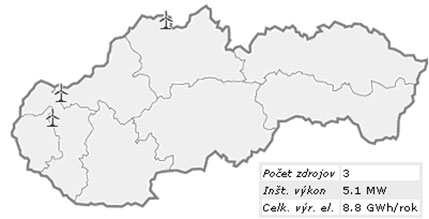

Veterná energia
Potenciál využitia veternej energie na Slovensku je stanovený podľa prírodných podmienok na 605 GWh / rok. Technický je možné inštalovať výkon: 300 MW.
Na Slovensku je v súčasnosti inštalovaný výkon: 3,14 MW s dvoma veternými parkmi:- Cerová: 4x660 kW
- Ostrý vrch (Myjava): 500 kW
V máji 2008 sa ukončila prevádzka veterného parku vSkalitom na Orave scelkovým výkonom 4x500 kW.
Maximálna výroby elektriny zvetra bola v roku 2006 (v GWh)  Zdroj: ECBSúčasný stav
| Inštalovaný výkon 2008 | Inštalovaný výkon 2009 | |
|---|---|---|
| Celkový | 5,14 MW | 3,14 MW |
| On-shore | 5,14 MW | 3,14 MW |
| Off-shore | 0 MW | 0 MW |
| [v GWh/rok] | 2008 | 2009 |
|---|---|---|
| Výroba elektriny z veternej energie | 7 | 6 |
Všeobecný prehľad
Slovensko ako vnútrozemská krajina disponuje v porovnaní s krajinami západnej Európy podstatne nižším veterno-energetickým potenciálom, ktorý determinujú prírodné podmienky. Základným kritériom pre odhad potenciálu je priemerná rýchlosť vetra. Všeobecne sa podľa priemernej rýchlosti vetra posudzuje typ lokality a môže sa stanoviť ročná výroba energie vztiahnutá na jednotku plochy vzdušného prúdu, ktorý ročne pretečie cez priemer vrtule.
Priemerné rýchlosti vetra sú merané vo výške 10 m nad terénom. Pre veterné turbíny s predpokladanou výškou osi rotora cca 40 m bude reálna rýchlosť vyššia asi 1,2 krát. Podrobnosti znázorňuje tabuľka:
| Typ lokality | Priemerná rýchlosť vetra (m/s) | Výroba energie (kWh/m2 ročne) |
|---|---|---|
| Slabá | 5,5 | 330 - 420 |
| Prijateľná | 6,5 | 550 - 690 |
| Dobrá | 7,5 | 850 - 1050 |
| Veľmi dobrá | 8,5 | 1200 - 1540 |
Na Slovensku sa medzi dlhodobo meranými miestami lokality s priemernou celoročnou rýchlosťou vetra nad 5 m/s (vo svete sú považované za podpriemerné lokality s rýchlosťou vetra menšou ako 6 m/s) s výnimkou Krížnej a Červenice - Dubníka (5,7 m/s) a Chopka (9,8 m/s) nevyskytujú. Ďalšie miesta s nameranou priemernou rýchlosťou 4,6 m/s (Bratislava - Koliba a Poprad) uzatvárajú prehľad meraných lokalít s ako-tak vyhovujúcimi podmienkami pre využitie energie vetra. To samozrejme neznamená, že miest s podobnými veternými podmienkami nie je viac. Patria medzi ne najmä vrchné časti hrebeňov a svahov na horách a určite sa nájdu aj miesta, kde pôsobí tzv. dýzový efekt - zrýchlenie prúdu vzduchu v zúženom terénnom priereze.
Vhodné - zhľadiska priemernej rýchlosti vetra - sú horské oblasti, najmä hrebeňové polohy a sedlá, s málo zvlneným reliéfom vokolí a bez lesného porastu. Knajvhodnejším patrí hrebeň Nízkych Tatier, Slovenského Rudohoria, Malých a Bielych Karpát, Malej a Veľkej Fatry a ďalších pohorí. Údolné a kotlinové polohy sú naopak nepriaznivé, s priemernou ročnou rýchlosťou pod 2,5 m/s. Výnimkou sú oblasť Devínskej brány a časť Podunajskej nížiny za Malými Karpatami, kde môžeme na vhodných lokalitách očakávať priemerné rýchlosti vetra okolo 3,5 m/s. Podobne to je voblasti Popradskej a Košickej kotliny.
Samostatne treba posudzovať rôzne veterné mikrozdroje, používané v miestach bez privedenej verejnej elektrickej siete. Takéto jednotky s inštalovaným výkonom od desiatok wattov do niekoľkých kilowattov, nabíjajúce batérie alebo priamo poháňajúce čerpadlá na vodu, sa s úspechom používajú na celom svete aj v lokalitách, kde priemerná rýchlosť vetra je len 3 m/s. Tieto mikrozdroje sa do veterno-energetickej bilancie nezapočítavajú.
Ako obmedzujúce meteorologické faktory v oblasti plánovanej výstavby veterných elektrární sú turbulencie a námraza vplývajúca na zaťaženie súčastí elektrární. Turbulencia je zvýšená v členitom a nehomogénnom teréne a zvýšený výskyt námrazy je charakteristický pre všetky horské oblasti, pričom vrcholové polohy patria k oblastiam s ťažkou námrazou.
Zoznam lokalít a základné údaje o celkovej rozlohe územia a stanovenej efektívnej ploche územia obsahuje tabuľka. Z rozboru situácie vyplýva, že efektívna plocha územia vhodného pre realizáciu veterných turbín je veľmi malá (cca 191 km2, čo je len 0,39 % z celkovej rozlohy Slovenska). Podstatná časť územia SR patrí do kategórie s veľmi slabými podmienkami pre využívanie veternej energie. Tu by sa mohli uplatňovať len malé individuálne zdroje.
| Lokalita | Rozloha územia, podľa rýchlosti vetra | Počet lokalít | Efektívna plocha (km2) | ||
|---|---|---|---|---|---|
| v > 3,5 m/s | v > 4,5 m/s | v > 5,5 m/s | |||
| SPOLU | 8067 | 1161 | 191 | 43 | 257 |
| % z rozlohy SR | 16,4 | 2369 | 0,39 | - | 0,524 |
| Malé Karpaty | 572 | 70 | 0 | 3 | 35 |
| Biele Karpaty | 443 | 57 | 0 | 3 | 28,5 |
| Považský Inovec | 296 | 10 | 0 | 1 | 5 |
| Javorníky | 413 | 51 | 0 | 3 | 25,5 |
| Strážovské Vrchy | 346 | 9 | 0 | 1 | 6 |
| Beskydy | 78 | 12 | 0 | 1 | 6 |
| Malá Fatra | 667 | 66 | 0 | 0 | 0 |
| Kysucké Beskydy | 116 | 17 | 0 | 1 | 8,5 |
| Oravské Beskydy | 125 | 10 | 0 | 1 | 5 |
| Tatry | 919 | 224 | 73 | 0 | 0 |
| Levočské Vrchy | 62 | 18 | 0 | 3 | 9 |
| Ondavská Vrchovina | 132 | 13 | 0 | 3 | 6,5 |
| Nízke Beskydy | 289 | 19 | 0 | 4 | 9,5 |
| Tribeč/Vtáčnik | 225 | 10 | 0 | 1 | 5 |
| Štiavnické Vrchy | 232 | 0 | 0 | 0 | 0 |
| Veľká Fatra, Kremnické Vrchy | 593 | 98 | 0 | 4 | 49 |
| Javorie | 67 | 0 | 0 | 0 | 0 |
| Nízke Tatry | 864 | 357 | 118 | 0 | 0 |
| Popradská Kotlina | 25 | 0 | 0 | 0 | 0 |
| Slovenské Rudohorie | 747 | 52 | 0 | 3 | 26 |
| Volovské Vrchy | 393 | 35 | 0 | 4 | 17,5 |
| Slánske Vrchy | 240 | 25 | 0 | 5 | 12,5 |
| Vihorlatské Vrchy | 193 | 8 | 0 | 2 | 4 |
Veterná energia sa vdrvivej väčšine využíva na výrobu elektrickej energie, jej miestne využitie adodávku do verejnej siete. Princíp fungovania je jednoduchý, energia prúdenia vetra roztáča listy rotora atakto vytvorenú mechanickú energiu využíva generátor na výrobu prúdu.
V rozvojových krajinách veterné turbíny slúžia aj na čerpanie vody, inde aj výrobu teplej úžitkovej vody a prikurovanie v rodinných domoch. V týchto prípadoch sa využívajú menšie turbíny vyrábajúce jednosmerný elektrický prúd, ktorý je zdrojom energie pre elektrickú špirálu v tepelnom výmenníku.